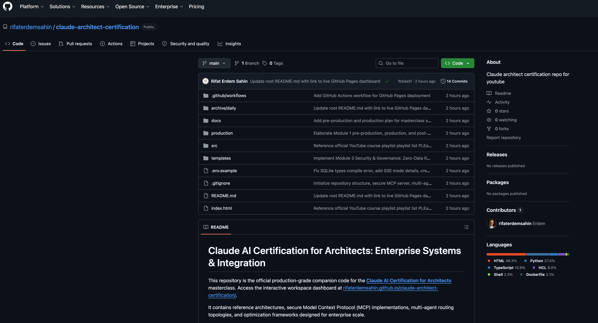

"Welcome to Module 1. Moving LLMs from a playground prototype or an experimental chat window into a secure, scalable production system requires systems engineering—not just clever prompting."
📦 Download Scene 1 Assets (.zip)
Background Artifact


"Today, we are breaking down the official Claude Architecture Blueprint. We are moving beyond basic API calls to understand model topologies, stateless middleware boundaries, and how the Model Context Protocol changes enterprise integration forever."
📦 Download Scene 2 Assets (.zip)
Background Artifact

"All the code, blueprints, and architecture files we cover are live right here on our project hub."
📦 Download Scene 3 Assets (.zip)
Background Artifact
